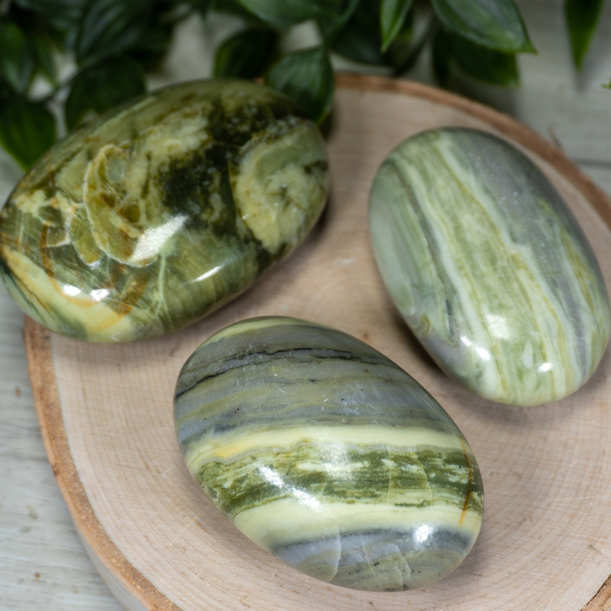
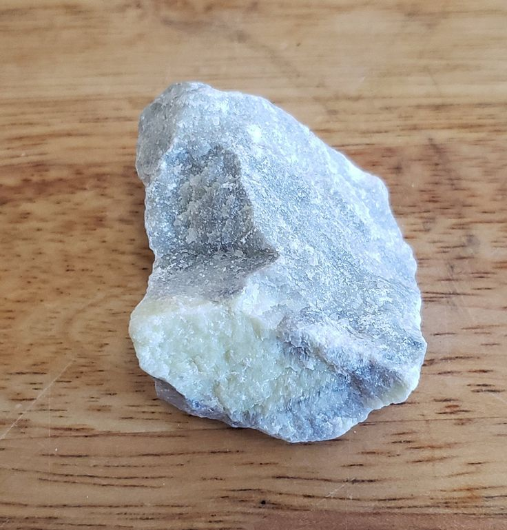
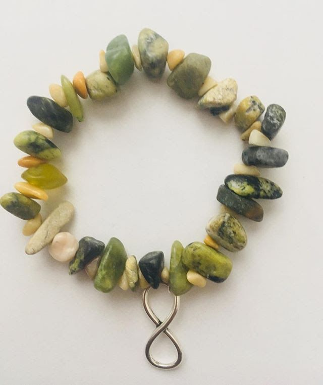

Infinite Stones: Properties, Uses, and How to Source Ethically
If you've ever held a stone and felt a sense of wonder, you're not alone. Stones tell stories that span millions of years, making them like time capsules from Earth's ancient history. Among the most fascinating are infinite stones—rare, mysterious, and packed with possibilities. Whether you're a budding rockhound, a curious geologist, or just someone who loves cool rocks, this article will take you on a journey to uncover the secrets of infinite stones.
Let's dive into their unique physical and chemical properties, how they form, where to find them, and even how to source them ethically. Trust me, by the end of this adventure, you'll be itching to grab your gear and head into the great outdoors—or at least visit rockhounding.org to learn more.
What Are Infinite Stones?
Infinite stones aren't just your average rocks. They're a special kind of stone known for their beautiful green hues, smooth texture, and unique metaphysical properties. Found mostly in specific regions around the world, these stones have captivated collectors and enthusiasts for generations.
So, what makes them "infinite"? The name comes from their endless potential for beauty, healing, and exploration. Many believe they have calming and healing properties, while others appreciate their stunning appearance in jewelry and décor.
Physical and Chemical Properties of Infinite Stones
To truly appreciate infinite stones, let's explore what they're made of and how to identify them:
Appearance
- Color: Infinite stones often have a soft green shade, ranging from pale mint to deeper moss green.
- Texture: They're known for their silky smooth surface, making them great for polishing.
- Luster: Their sheen can be matte or slightly glossy, depending on how they're cut and polished.
Composition
Infinite stones are primarily composed of minerals like serpentine, giving them their unique color and texture. Serpentine minerals are rich in magnesium and silicon, making these stones sturdy yet light.
Hardness and Durability
Mohs Scale: Infinite stones fall between 4 and 5 on the Mohs scale, meaning they're softer than quartz but harder than talc. This makes them easy to carve but durable enough for everyday handling.
Unique Features
- Some infinite stones have healing properties believed to help with relaxation and stress relief.
- Their magnetic energy isn't scientifically proven, but many enthusiasts claim they feel a distinct calming sensation when holding one.
How Infinite Stones Form
The formation of infinite stones is a fascinating process. Millions of years ago, deep within the Earth's crust, extreme heat and pressure worked on mineral-rich rocks, transforming them into what we now call infinite stones.
Key Geological Conditions:
- High Pressure: Helps compress minerals into dense, compact stones.
- Heat: Alters the structure of serpentine minerals, giving infinite stones their unique look.
Over time, erosion brought these stones closer to the Earth's surface, where we can now discover them during rockhounding adventures.
Where Are Infinite Stones Found?
Infinite stones can be found in several regions around the world, but they're especially common in areas with ancient volcanic activity and metamorphic rock formations.
Top Sources of Infinite Stones:
- South Africa: Known for large deposits of high-quality infinite stones.
- India: A key exporter, with stones used in both jewelry and spiritual practices.
- Australia: A favorite destination for rockhounds looking for rare infinite stone variants.
If you're lucky, you might even find infinite stones during a hike in areas with serpentine-rich soils.
Historical and Cultural Significance
Throughout history, infinite stones have held a special place in various cultures:
- Ancient Civilizations: Infinite stones were often used in spiritual rituals, believed to connect people with nature and bring inner peace.
- Traditional Jewelry: Many cultures crafted infinite stones into amulets to ward off negative energy.
- Modern Symbolism: Today, they're still seen as symbols of calmness, strength, and renewal.
This deep-rooted connection makes infinite stones more than just pretty rocks—they're a link to humanity's past.
Uses and Applications of Infinite Stones
Industrial Uses
Though infinite stones are primarily known for their beauty, they're also practical:
- Construction Materials: Their durability makes them ideal for countertops and tiles.
- Sculptures: Their smooth texture is perfect for intricate carvings.
Decorative and Artistic Uses
- Jewelry: From necklaces to bracelets, infinite stones add a natural elegance.
- Home Décor: Polished infinite stones can be used as centerpieces, bookends, or even table surfaces.
Healing Properties of Infinite Stones
Many people believe in the metaphysical properties of infinite stones:
- Stress Relief: Holding an infinite stone is said to promote calmness.
- Energy Balance: Some claim that infinite stones can help align your body's energy.
Whether or not you believe in their mystical powers, there's no denying that they're beautiful and comforting to hold.
How to Source Infinite Stones Ethically
Ethical sourcing is essential if we want to protect the Earth and the people who mine these precious stones.
Environmental Impact
Mining can harm the environment by disrupting ecosystems and causing pollution. By supporting ethical practices, you help preserve nature.
Fair Trade Practices
Look for suppliers that follow fair trade guidelines, ensuring workers are paid fairly and operate under safe conditions.
Tips for Sourcing Responsibly:
- Buy from Certified Dealers: Always ask about the origin of the stone.
- Research Sustainable Mines: Support mines that minimize environmental damage.
- Consider Alternatives: Lab-grown stones offer a sustainable option without sacrificing beauty.
For more guidance, visit rockhounding.org to connect with responsible suppliers and learn how to make eco-friendly choices.
Tips for Rockhounds and Collectors
Ready to start your rockhounding adventure? Here's what you need to know:
Identification Techniques
- Look for the signature green color and silky texture.
- Use a hand lens to inspect the stone's surface for mineral patterns.
Collecting Best Practices
- Respect Nature: Always leave some stones behind for future generations.
- Follow Local Laws: Get permission before collecting stones in protected areas.
Storage and Maintenance
- Keep your infinite stones in a cool, dry place to prevent damage.
- Clean them with a soft cloth and mild soap to maintain their shine.
Conclusion
Infinite stones are more than just beautiful—they're a window into the Earth's past and a symbol of endless possibilities. Whether you're fascinated by their healing properties, their geological formation, or their uses in art and industry, there's always more to learn.
So, what are you waiting for? Start your adventure today, and don't forget to visit rockhounding.org for expert tips, guides, and ethical sourcing advice. Don't miss out on the opportunity to uncover the secrets of these incredible stones!